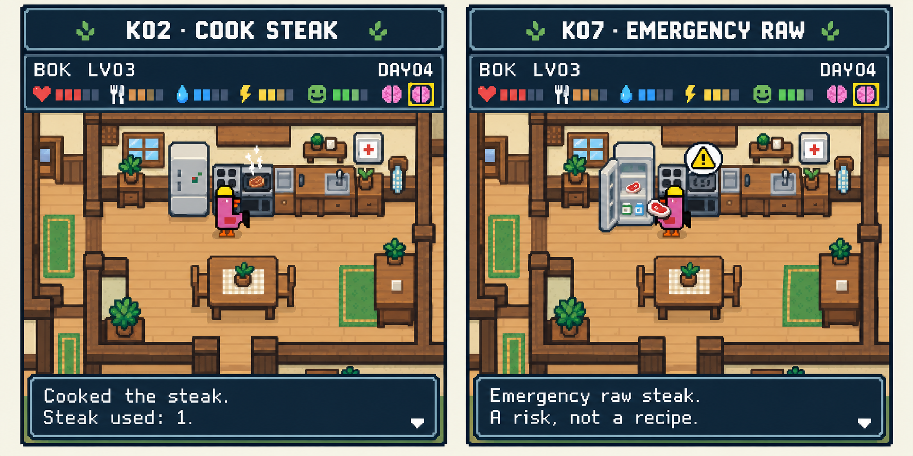

NH-055
2 panels · reviewed guideSteak Choice

Coverage
Appearance and placement reference. Use the complete reference map for exact state, input and safe-action requirements.
Build notes
Cooked versus emergency raw is clear and beyond protected day1. Duplicate brain glyphs/omitted replay controls are inherited guide artifacts; use one inspection button plus shared Pause/Skip. Props are action animation, not repeated stock credit. Use one inspection brain and shared Pause/Skip even where the inherited HUD/event-box art omits or duplicates them.